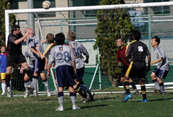
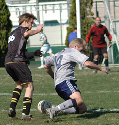
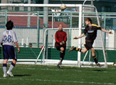

|
YC&AC, Sunday 18th November,
YCAC Seconds record prior to this game had such pleasing symmetry - Played 4, Won 2, Lost 2, Goals For 11, Goals Against 11 - it seemed a shame to play and muck those well-balanced stats up. But duty called.........
A typically bright and blustery day at the YCAC for the 5th game of this campaign saw us set to play league new boys Panthers. Having done our usual rigorous scouting and pre-match preparation, we knew they had given a number of teams a very close game and we expected similar. We had a big squad for the 5th game in a row, with the full 5 subs available and this always gives Benitez-type issues. Fortunately the "squad" culture that our new skippa WingCo Lawrence has brought to the team means this is never as difficult as you might expect.

We started very brightly and in the first 20 I think were good value for the 2-0 lead. Both goals came from nice moves down the right, one finished neatly by Pete Fairbrother who picked his spot from 15 yards, and the other headed over the keeper and in by Kaz. That Phil Denham and Matt Tuck were involved in both was fairly typical of their play during the whole match. It was not one-way traffic, however, and a piece of very quick thinking by the Panthers centre forward saw him steal the ball from our keeper Paul Blamire's clutches and slide it in from an angle. Matt made it 3-1 shortly afterwards and I wish I could tell you about that goal, but was answering a call of nature at the time after a particulary heavy night. I was back in time, however, to see Matt locate the upright with a fine shot shortly afterwards
Second half we made three changes, Kaz, Rob and Alex taking a well-earned break and making room for Mikey, Taiki and Gavi (n)........you know, at times we are even sounding like a proper team. I think we had the lions share of chances in the 2nds half but failed to convert. On the other hand, Panthers were awarded a penalty (correctly) which was converted and as result we seemed to be hanging on for the last 10 minutes when really we should perhaps have been a wee bit more comfortable.
I thought we played well across the whole back 4, thanks again to Paul Blamire for stepping in, tirelss effort across the board in midfield and upfront. Also congratulations to Min Sung for the fastest yellow card ever awarded to a substitute..
Report by Big Steve McKie
|